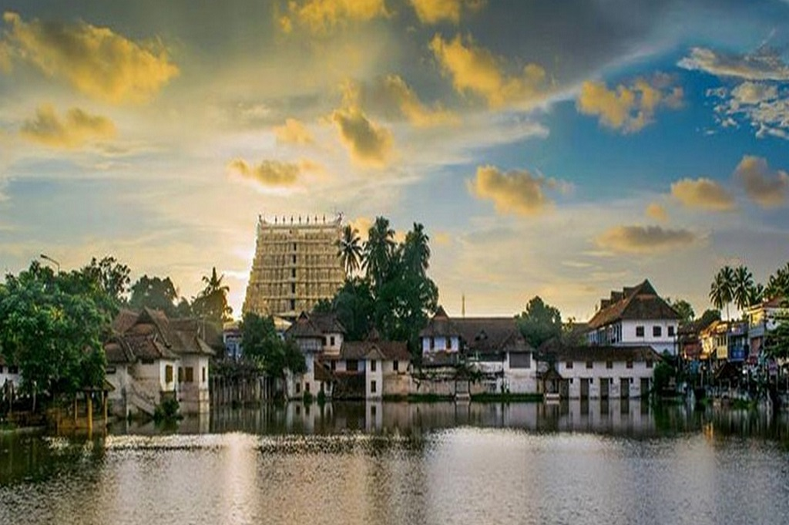
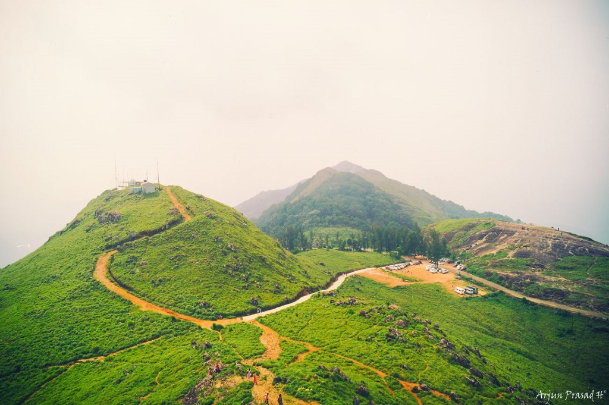
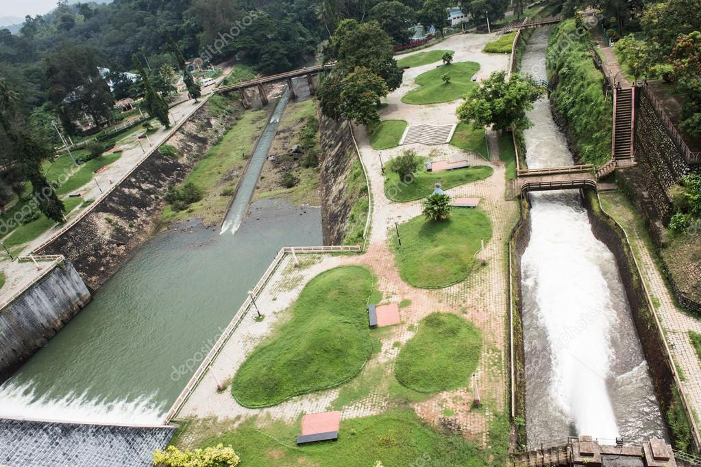

POINTS OF INTEREST

PADMANABHA SWAMY TEMPLE
Richest temple in India and the entire World at large.

PONMUDI
A large amount of rare flora and fauna can be seen here including mountain flowers, wild orchids and exotic butterflies.

VELI TOURIST VILLAGE
The Veli Tourist Village which lies where the Veli Lake meets the Arabian Sea provides for unique boating and picnicking opportunities.

NEYYAR DAM
Neyyar dam is a gravity dam on the Neyyar River, located on the foot of the Western Ghats.

KUTHIRAMALIKA
122 smiling wooden horses await all who visit ‘Kuthiramalika’, which means “palace of horses”. Also known as Puthenmalika Palace Museum.